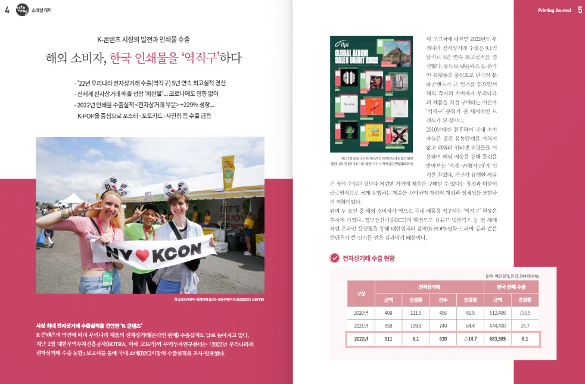

非게임업계 · 2021.04 — 2023.05
인쇄/출판업계
인앤잡(교육&진로 서적), 뉴스앤잡(인터넷 신문사), 인쇄저널(전문지)에서 출판기획과 취재를 담당했습니다.
- 기간
- 2021.04.16 — 2023.05.12
- 역할
- 출판기획 · 취재기자
- 소속
- 인앤잡 · 뉴스앤잡 · 인쇄저널
- 사용 툴
- 어도비 인디자인
01
맡은 업무
출판기획자로서 서적의 기획 방향을 설정하고 원고 편집, 교정 교열 등을 담당하였습니다. 또한, 첫 직장에서 인터넷 신문사를 운영하고 있어 주로 전문대학을 중심으로 취재 및 인터뷰를 진행하기도 했습니다.
직전 경력인 ‘서울특별시인쇄정보산업협동조합’에서는 인쇄업계 전문지인 <월간 인쇄저널>의 실무자로 일하며 취재, 출판편집, 디자인 외주 협업, 인쇄, 배포, 광고 협업 등의 실무 전체를 담당하였습니다.

02
경험 정리 및 게임업계로 전직하게 된 계기
책, 소설을 좋아하는 문학청년이었기 때문에 어릴 적부터 소설가를 지망했고 그 연장선에서 인쇄/출판업계에서 일하게 되었습니다. 업계에서 작가, 디자이너, 인쇄소 등 다양한 분야의 사람들과 협업하는 것이 즐거웠습니다. 또한, 디지털 대전환으로 인해 사라져가는 종이책 산업에 일조하고 싶다는 생각으로 일했습니다.
그러나 한편으로는 저는 어릴 적부터 항상 게임을 직접 만들고 싶다는 생각을 하고 있었습니다. 취미의 연장선에서 유니티, 렌파이 등 상용/오픈소스 엔진을 이용해 게임을 만들어보고 있었으나 취미로는 한계가 있다는 생각에 이르렀습니다.
2023년에 책에 대한 생각보다 게임 창작에 대한 열망이 더욱 커지게 됐고 “최고의 게임을 만들고 싶다”라는 일념으로 게임기획자라는 직무에 도전하게 되었습니다.